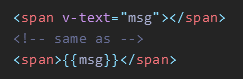

¿Qué es Vue?
- Es un de código abierto para la construcción de interfaces de usuario y aplicaciones de una sola página.
- Fue creado por Evan You, y es mantenido por él y por el resto de los miembros activos del equipo central.
- La librería central está enfocada solo en la capa de visualización, y es fácil de utilizar e integrar con otras librerías o proyectos existentes.
- Se basa en HTML, CSS y JavaScript estándar y proporciona un modelo de programación declarativo y basado en componentes.
En este ejemplo podemos observar dos conceptos claves de Vue :
- Declarative Rendering : nos permite renderizar data en el DOM usando una sintaxis de plantilla,basado en el estado de JavaScript. Las llaves dobles se utilizan como marcadores de posición para interpolar los datos requeridos en el DOM.
- Reactivity : Vue rastrea automáticamente los cambios de estado de JavaScript y actualiza de manera eficiente el DOM cuando ocurren cambios.


Instalación
Podemos incorporar Vue a nuestros proyectos de dos maneras: mediante npm a través de Node.js, o incluyéndolo directamente con una etiqueta <script>.
Utilizando npm
NPM es el método de instalación recomendado para construir aplicaciones a gran escala con Vue.
Requisitos previos:
- Familiaridad con la línea de comandos.
- Tener instalado Node.js en su versión más actual.
Primero, en la línea de comandos, ejecutar el comando npm init vue@latest:
Este comando instalará y ejecutará create-vue, la herramienta oficial para la construcción del proyecto Vue.
A continuación, se te presentarán indicaciones para varias funciones opcionales, como TypeScript y soporte para testing.
Si estás en duda acerca de una opción, simplemente elige No con la tecla Enter.
Una vez creado el proyecto, sigue las instrucciones para instalar las dependencias e iniciar el servidor de desarrollo:
Al ejecutar el último comando, se te otorgará tu servidor de desarrollo, y una vez que accedes a él...
¡Felicidades, con esto deberías de tener tu primer proyecto de Vue funcionando!
Inclusión directa con <script>
A diferencia de Angular y React, Vue puede ser incorporado a través de una etiqueta <script> en cualquier momento.
Simplemente descarga e incluye la etiqueta script con la ruta correcta. Vue será registrado como una variable global.
Por ejemplo, usando la CDN de unpkg:
Cuando se usa Vue desde un CDN, no hay un "paso de compilación" involucrado. Esto hace que la configuración sea mucho más simple y es adecuado para mejorar HTML estático o integrarse con un marco de back-end.
Workspace y aplicación inicial
Luego de la instalación por npm, observarás algo como esto en tu editor de código:
package.json: aquí tenemos el listado de nuestras dependencias netas del proyecto y de dependencias de desarrollo que podremos agregar. Además, también se encuentran algunos comandos que utilizaremos para automatizar procesos, como npm run dev (para levantar el servidor de desarrollo), npm run build (para compilar nuestro proyecto), y npm run preview (para visualizar el proyecto ya compilado).
index.html: lo más importante de este archivo es que, en el body, contiene un <div id="app"></div>, que es donde se renderizará toda nuestra aplicación.
src: aquí es donde trabajaremos mayoritariamente, contiene:
- components: donde se alojan nuestros componentes.
- assets: donde se alojan los archivos estáticos.
- main.js: siendo la raíz de nuestro proyecto.
Archivo App.vue y archivos .vue:
.vue es una extensión que se ha creado para definir a este tipo de archivos, que tienen una característica muy interesante.
Estos archivos .vue se dividen en tres secciones:
- <template>: es en esta sección donde agregamos el código HTML de la aplicación.
- <script>: aquí es donde agregamos el código JavaScript.
- <style>: aquí es donde agregamos los estilos con código CSS.
Al estar todo en un mismo archivo, significa que cuando creamos aplicaciones utilizando esta extensión, podremos tener todo lo que requiere este componente dentro del mismo archivo: el template de HTML, el script que agrega las funcionalidades a la aplicación, y los estilos, que al tener el atributo scoped, sólo afectan a este componente (no se propagarán a otros archivos).
Conceptos clave
Componentes
En la mayoría de los proyectos de Vue habilitados para herramientas de compilación, creamos componentes de Vue utilizando un formato de archivo similar a HTML llamado Single-File Component (también conocido como files, abreviado como SFC).
Un Vue SFC, como su nombre indica, encapsula la lógica del componente (JavaScript), la plantilla (HTML) y los estilos (CSS) en un solo archivo.
SFC es una característica definitoria de Vue y es la forma recomendada de crear componentes de Vuesisu caso de uso justifica una configuración de compilación.
Ejemplo en formato SFC:
Directivas
Las directivas son instrucciones o atributos para que Vue haga las cosas de cierta manera.
Llevan el prefijo v- que indican que es específico de Vue y no parte del HTML nativo.
- v-text : Actualiza el contenido de texto de un elemento 
- v-html : Actualiza el innerHTML de un elemento
- v-show : Alterna la visibilidad del elemento en función de la veracidad del valor de la expresión
- v-if : Renderiza condicionalmente un elemento o un fragmento de plantilla en función de la veracidad del valor de la expresión
- v-else
- v-else-if
- v-for : Renderiza el elemento o el bloque de plantilla varias veces en función de los datos de origen
- v-on : Adjunta una escucha de evento al elemento
- v-bind : Enlaza dinámicamente uno o más atributos, o una propiedad de componente a una expresión
- v-model : Crea un enlace bidireccional en un elemento de entrada de formulario o un componente
- v-slot
- v-pre : Omite la compilación de este elemento y todos sus elementos hijos
- v-once : Renderiza el elemento y el componente una sola vez y omita las actualizaciones futuras
- v-memo
- v-cloak : Se utiliza para ocultar la plantilla sin compilar hasta que esté lista